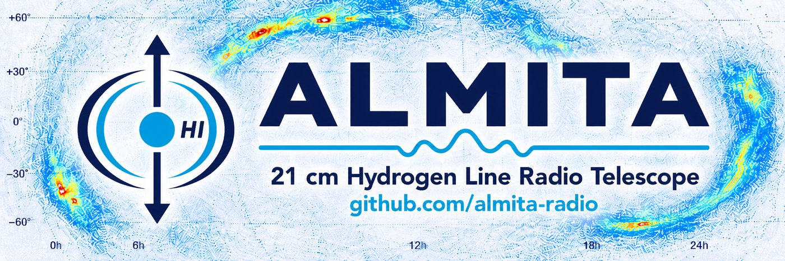

Radioastronomía amateur · hecho en ChileAmateur radio astronomy · made in ChileALMITA, creado por Felipe Fridman G., es un plato de rejilla, una antena casera, un receptor de radio por USB y mucho software abierto, escrito desde cero para este proyecto. Con eso capta una señal que el hidrógeno de nuestra galaxia emite desde hace miles de millones de años, y con ella dibuja cómo se mueve el gas de la Vía Láctea.ALMITA, created by Felipe Fridman G., is a grid dish, a home-made antenna, a USB radio receiver and a lot of open software, written from scratch for this project. With them it picks up a signal our galaxy's hydrogen has been sending for billions of years, and uses it to draw how the Milky Way's gas moves.
(El nombre: (The name: Antenna Listening Mostly to Interference, Tentatively Astronomy. Es honesto.) It is honest.)
El hidrógeno es lo más abundante del universo. Entre las estrellas flota en nubes frías y oscuras que ningún telescopio común ve. Pero emiten en radio, siempre en la misma frecuencia.Hydrogen is the most common thing in the universe. Between the stars it floats in cold, dark clouds no ordinary telescope can see. But they broadcast in radio, always on the same frequency.
Cuando el electrón de un átomo de hidrógeno da vuelta su giro, suelta una onda de radio de 21 cm. Un átomo lo hace una vez cada ~10 millones de años, pero en la galaxia hay tantos que la señal no se apaga nunca.When the electron of a hydrogen atom flips its spin, it lets out a 21 cm radio wave. One atom does it about once every 10 million years, but the galaxy holds so many that the signal never stops.
Si la nube se acerca, la línea llega un poco más aguda; si se aleja, más grave, como la sirena de una ambulancia. Midiendo cuánto se corre, ALMITA sabe a qué velocidad se mueve el gas.If the cloud comes toward us the line arrives a little higher; if it moves away, a little lower, like an ambulance siren. From how far it shifts, ALMITA knows how fast the gas moves.
Las ondas de radio atraviesan el polvo que tapa la luz visible. Apuntando a distintas partes de la Vía Láctea y midiendo velocidades, se nota que el disco gira: un lado viene hacia nosotros y el otro se aleja.Radio waves cross the dust that hides visible light. Pointing at different parts of the Milky Way and measuring speeds shows that the disc rotates: one side comes toward us, the other moves away.
Todo el hardware cabe en un techo y cuesta lo que un hobby. Lo difícil es sacar una señal que apenas asoma, un 5 a 15 % sobre el ruido del propio receptor, y que no se confunda con interferencias.All the hardware fits on a rooftop and costs what a hobby costs. The hard part is pulling out a signal that barely rises 5 to 15 % above the receiver's own noise, without mistaking interference for it.
Una rejilla de ~90 × 60 cm junta las ondas en una antena dipolo hecha a mano. Mira un trozo de cielo de 20°, unas 40 lunas llenas de ancho.A ~90 × 60 cm grid gathers the waves onto a hand-made dipole antenna. It sees a patch of sky 20° wide, about 40 full moons.
Un amplificador de bajo ruido, pegado a la antena, sube la señal antes de que el cable se la coma. Trae un filtro de banda SAW que deja pasar la banda del hidrógeno, alrededor de 1420 MHz, y frena a los vecinos ruidosos, como los celulares.A low-noise amplifier right at the antenna boosts the signal before the cable eats it. Its SAW band-pass filter lets through the hydrogen band around 1420 MHz and holds back noisy neighbours such as mobile phones.
Un RTL-SDR: nació como sintonizador de TV por USB. Digitaliza 2,4 millones de muestras por segundo alrededor de 1420 MHz.An RTL-SDR, born as a USB TV tuner. It digitises 2.4 million samples a second around 1420 MHz.
Una montura ecuatorial motorizada apunta el plato y sigue el cielo mientras la Tierra gira.A motorised equatorial mount points the dish and follows the sky as the Earth turns.
Una Raspberry Pi en una caja metálica junto al plato, y un notebook adentro que corre la consola web y todo el procesamiento.A Raspberry Pi in a metal box by the dish, and a notebook indoors running the web console and all the processing.
Cada resultado viene con lo que todavía no demuestra. Las intensidades son relativas: aún no hay calibración absoluta.Every result comes with what it does not show yet. Intensities are relative: there is no absolute calibration yet.
Una tarde con el piloto automático: 99 capturas, ninguna falló. A un lado del centro galáctico el hidrógeno se aleja, al otro se acerca, y la diferencia crece hacia afuera: la velocidad media va de +18 km/s a −19 km/s. El disco rota.An afternoon on autopilot: 99 captures, none failed. On one side of the Galactic Centre the hydrogen recedes, on the other it approaches, and the difference grows outward: the mean velocity goes from +18 km/s to −19 km/s. The disc rotates.
PeroBut · todavía no es una velocidad de rotación: con un plato de 20° y una sola tarde, la mitad del número sale de un supuesto. Una revisión del 25 de noviembre retiró las dos velocidades publicadas al principio.it is not yet a rotation speed: with a 20° dish and one afternoon, half the number comes from an assumption. A 25 November review withdrew the two speeds first published.
Con conmutación de frecuencia (el receptor salta entre dos sintonías: el hidrógeno se mueve y las imperfecciones del receptor no), la línea apareció en los 25 puntos del mosaico, sobre una base plana. Su forma calza con HI4PI con correlación de 0,95 a 0,99.With frequency switching (the receiver hops between two tunings: the hydrogen moves, the receiver's flaws do not), the line showed up in all 25 points of the mosaic on a flat baseline. Its shape matches HI4PI with a correlation of 0.95 to 0.99.
PeroBut · el espectro de HI4PI de otro punto de la grilla calza casi igual de bien, y las Nubes de Magallanes no se detectaron.HI4PI's spectrum of another point of the grid matches almost as well, and the Magellanic Clouds were not detected.
La primera noche en el techo, ALMITA vio la línea del hidrógeno donde el catálogo HI4PI dice que debe estar, y del lado correcto del cero de velocidad: con el eje invertido, la coincidencia se cae.On its first rooftop night, ALMITA saw the hydrogen line where the HI4PI survey says it should be, on the right side of zero velocity: with the axis flipped, the match falls apart.
PeroBut · muestra hidrógeno con el signo correcto, no que cada espectro calce con su propio punto del cielo.it shows hydrogen with the right sign, not that each spectrum matches its own point in the sky.
Cada módulo es una página de la consola. Las imágenes vienen de la demo SIMULADA, donde el telescopio y el receptor son simulados y el cielo sale de un catálogo profesional (HI4PI). Puedes abrir cada una y apretar botones. Each module is a page of the console. The pictures come from the SIMULATED demo, where telescope and receiver are simulated and the sky comes from a professional survey (HI4PI). You can open each one and press buttons.
Tour técnico de la consola, en inglés →Technical tour of the console →
Durante semanas, una "señal" misteriosa era la Raspberry Pi 5 que manejaba el telescopio, emitiendo justo en la banda del hidrógeno. Se jubiló; ahora una Pi 4 vive en una caja metálica.For weeks a mysterious "signal" was the Raspberry Pi 5 running the telescope, broadcasting right in the hydrogen band. It was retired; a Pi 4 now lives in a metal box.
Con nadie cerca, la caja quedaba limpia. Con una persona al lado de la antena, la interferencia volvía. Ahora se observa a distancia, desde la consola web.With nobody near, the box stayed clean. With a person next to the antenna, the interference came back. Now it is operated from a distance, through the web console.
Saltos de señal que parecían del cielo eran un contacto que iba y venía. Desde entonces: una variable a la vez, y el veredicto se escribe antes de mirar los datos.Jumps that looked like the sky were a contact coming and going. Since then: one variable at a time, and the verdict is written before looking at the data.
Partes del proyecto están muy bien diseñadas. Otras, muy bien amarradas. Es temporal. Hace bastante tiempo que es temporal.Some parts are carefully engineered. Others are carefully tied. It is temporary. It has been temporary for quite a while.
No. La demo es el software real de ALMITA manejando un telescopio y un receptor simulados, con un cielo sacado del catálogo HI4PI. Sirve para conocer la consola. Los resultados reales están en la sección de arriba.No. The demo is ALMITA's real software driving a simulated telescope and receiver, with a sky taken from the HI4PI survey. It is there to get to know the console. The real results are in the section above.
Sí, esa es la idea. El software es abierto (licencia MIT) y la documentación del hardware también (CERN-OHL-S-2.0). Todo está en GitHub. Si te embarcas, escribe: los errores ya cometidos están bien documentados.Yes, that is the idea. The software is open (MIT licence) and so is the hardware documentation (CERN-OHL-S-2.0). It is all on GitHub. If you set out, write in: the mistakes already made are well documented.
Porque es radio, no luz: una onda de 21 cm, como la de un celular o un microondas, pero muchísimo más débil. Hay que juntarla con una antena y promediar minutos para que asome entre el ruido.Because it is radio, not light: a 21 cm wave, like a phone's or a microwave oven's, but far fainter. It has to be gathered with an antenna and averaged for minutes to rise above the noise.
No. ALMITA solo escucha, no transmite nada. La banda de 1420 MHz está protegida para la radioastronomía justamente por eso.No. ALMITA only listens; it transmits nothing. The 1420 MHz band is protected for radio astronomy for exactly that reason.
Observar desde cielos con menos interferencia, repetir las mediciones muchas veces, medir ON y OFF a la misma altura y, algún día, calibrar en unidades físicas (Kelvin).Observing from skies with less interference, repeating the measurements many times, measuring ON and OFF at the same altitude and, one day, calibrating in physical units (Kelvin).
Felipe Fridman G., en Chile, como proyecto personal e independiente. Mucho del código se escribió conversando con IA, y todo se probó en terreno.Felipe Fridman G., in Chile, as a personal and independent project. Much of the code was written in conversation with AI, and all of it was tested in the field.
Colegios, clubes de astronomía, radioaficionados, curiosos y profesionales: todas las consultas son bienvenidas.Schools, astronomy clubs, radio amateurs, the curious and professionals: every question is welcome.
ffridman@gmail.com